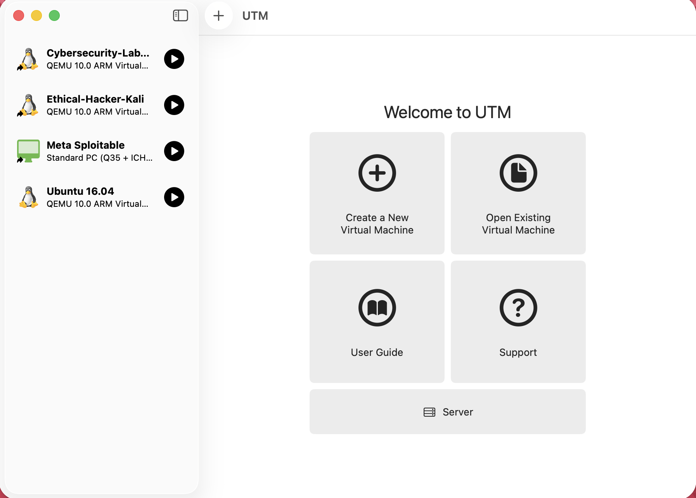
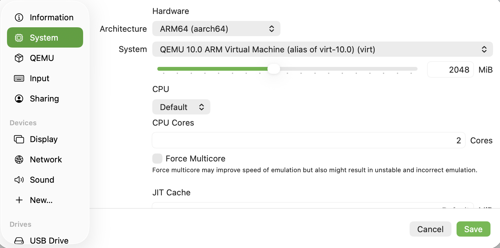
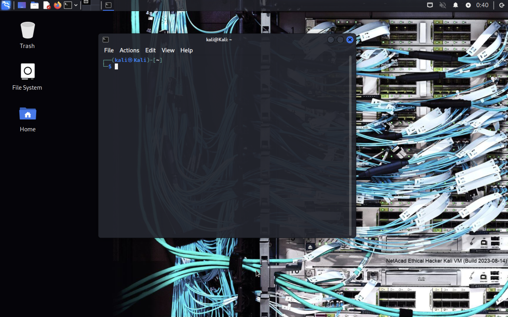
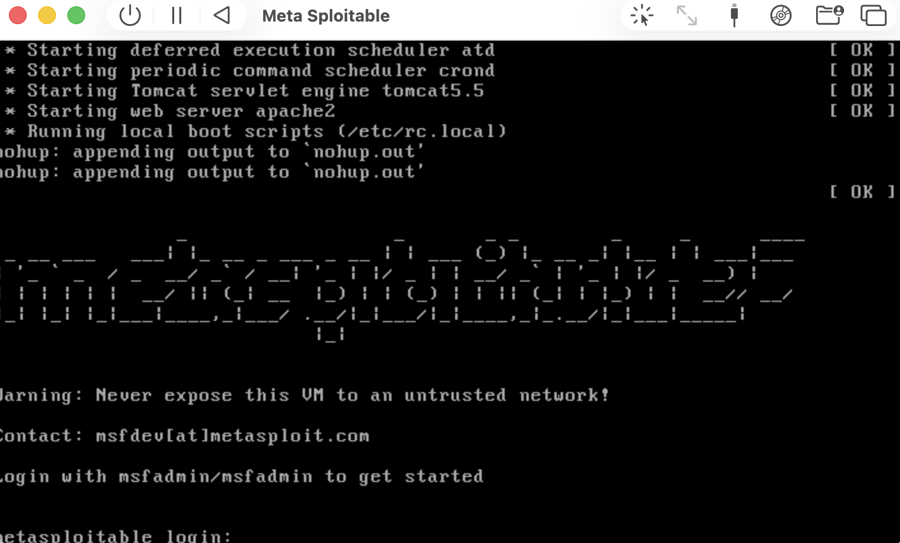
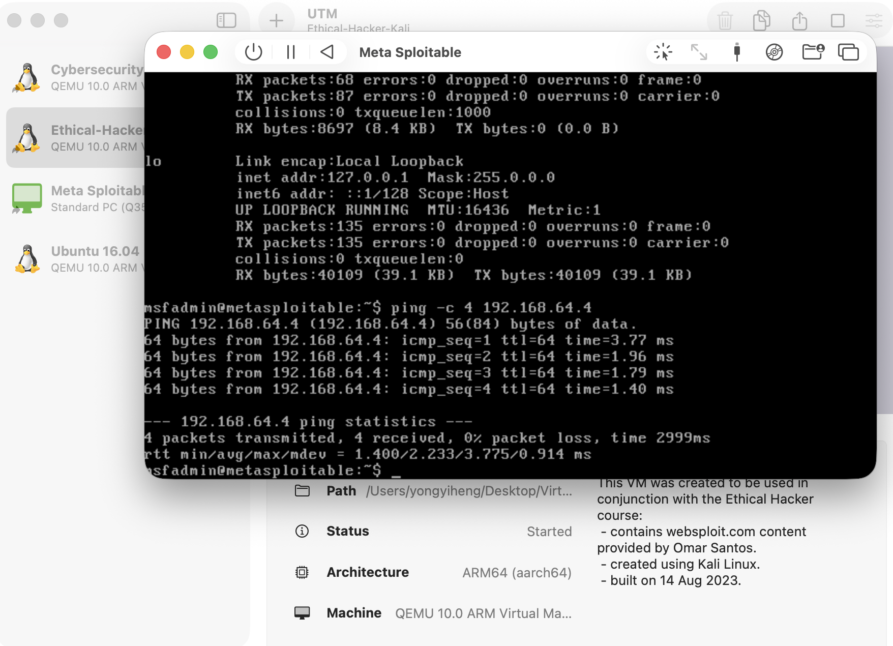
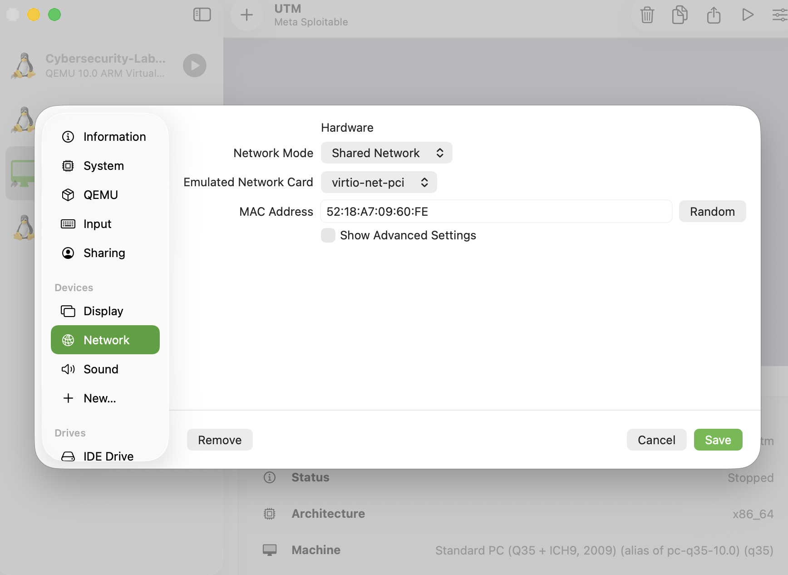

Project 1
Project 1: Virtual Lab Setup
1. Project Objective
The objective of this project is to establish a cybersecurity virtual lab environment for practising cybersecurity concepts and penetration-testing techniques in a controlled environment.
2. Environment and Tools
- Host Operating System: macOS
- Virtualisation Software: UTM
- Attacker Machine: Kali Linux
- Target Machine: Metasploitable 2
3. Methodology
- Install and configure UTM.
- Set up the Kali Linux virtual machine.
- Set up the Metasploitable 2 virtual machine.
- Configure the virtual network.
- Verify communication between the virtual machines.
4. Results and Evidence
4.1 UTM Virtual Machine Configuration
The following screenshot shows the virtual machines configured in UTM for the cybersecurity laboratory.

4.2 Virtual Machine Configuration
This screenshot shows the configuration of the virtual machines, including their allocated resources.

4.3 Kali Linux Successfully Booted
The following screenshot demonstrates that the Kali Linux virtual machine was successfully started.

4.4 Metasploitable 2 Successfully Booted
This screenshot demonstrates that the Metasploitable 2 virtual machine was successfully started.

4.5 Virtual Network Connectivity Test
The following screenshot demonstrates the network connectivity test between the virtual machines.

4.6 Network Configuration
This screenshot shows the network configuration used for the virtual laboratory.

5. Challenges and Improvements
During the virtual lab setup, I encountered several challenges:
-
Virtualisation Software Compatibility
Initially, I attempted to use Oracle VM VirtualBox to run Metasploitable 2. However, I encountered difficulties getting the virtual machine to run successfully. Therefore, I decided to switch to UTM, which allowed me to continue setting up my lab.
-
Virtual Machine Configuration
Configuring both virtual machines required careful attention. Incorrect settings could prevent a virtual machine from starting or operating properly.
Improvements
In future setups, I would:
- Check the virtual machine requirements before installation.
- Verify CPU, memory and network configurations.
- Keep a backup of the working virtual machine configurations.
- Test network connectivity before performing cybersecurity exercises.
6. Security Considerations
The virtual lab is intended for authorised cybersecurity learning and testing. The vulnerable target machine should remain isolated from untrusted networks.